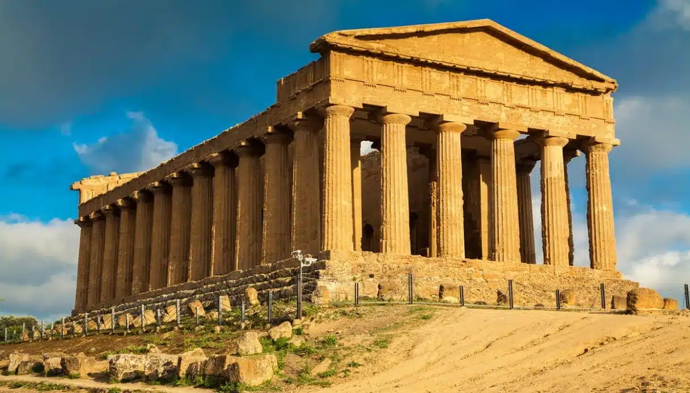
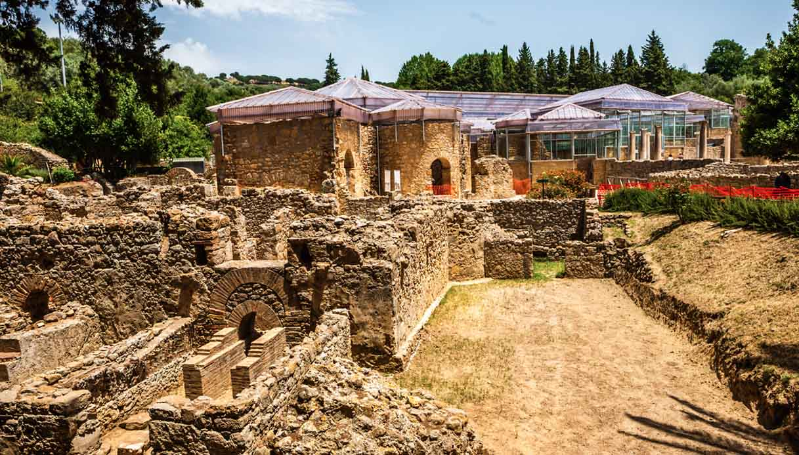
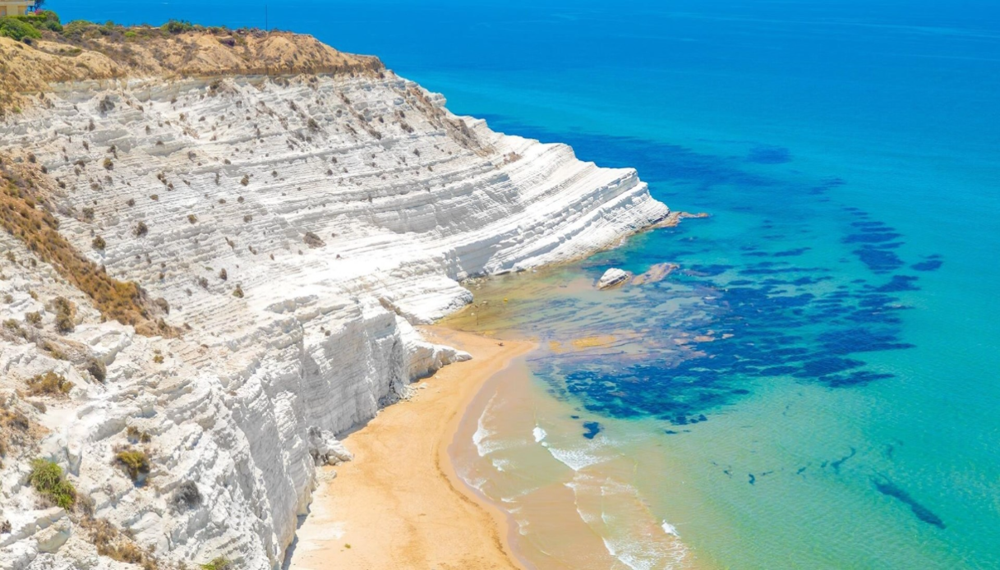
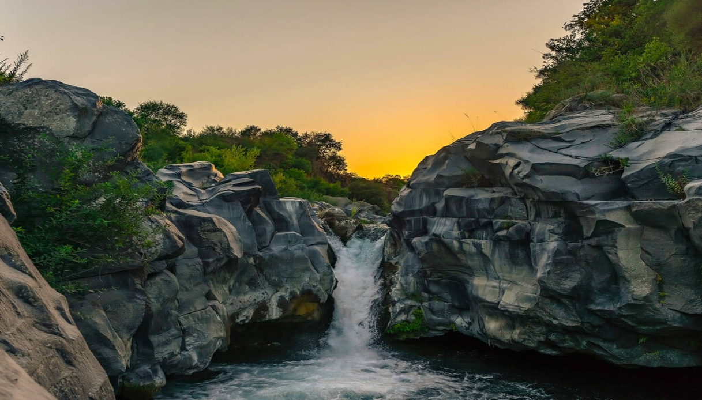

Portami lì
Valle dei templi
La Valle dei Templi di Agrigento è uno straordinario sito archeologico della Magna Grecia, celebre per i suoi templi dorici perfettamente conservati, come il Tempio della Concordia.

Portami lì
Villa Romana del Casale
La Villa Romana del Casale, vicino a Piazza Armerina, è una lussuosa residenza imperiale famosa per i suoi straordinari mosaici pavimentali, tra i meglio conservati dell’antichità.

Portami lì
Scala dei Turchi
La Scala dei Turchi è una suggestiva scogliera di marna bianca a strapiombo sul mare, situata lungo la costa di Realmonte, vicino Agrigento, famosa per la sua forma a gradoni naturali e il colore candido.

Portami lì
Gole dell'Alcantara
Città barocca ricca di storia, patrimonio UNESCO, con scorci suggestivi e strade che raccontano il passato.